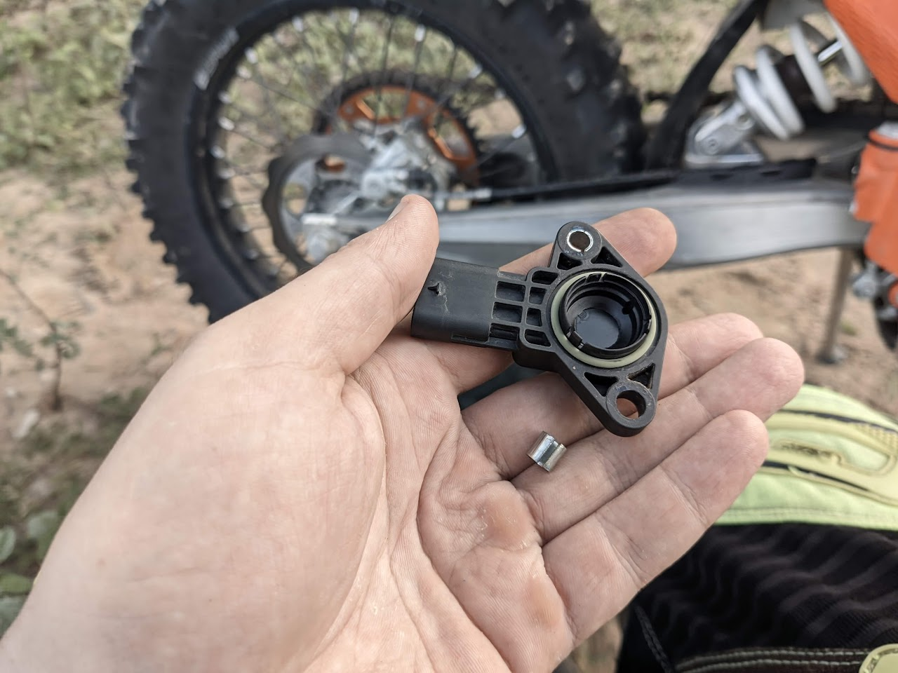
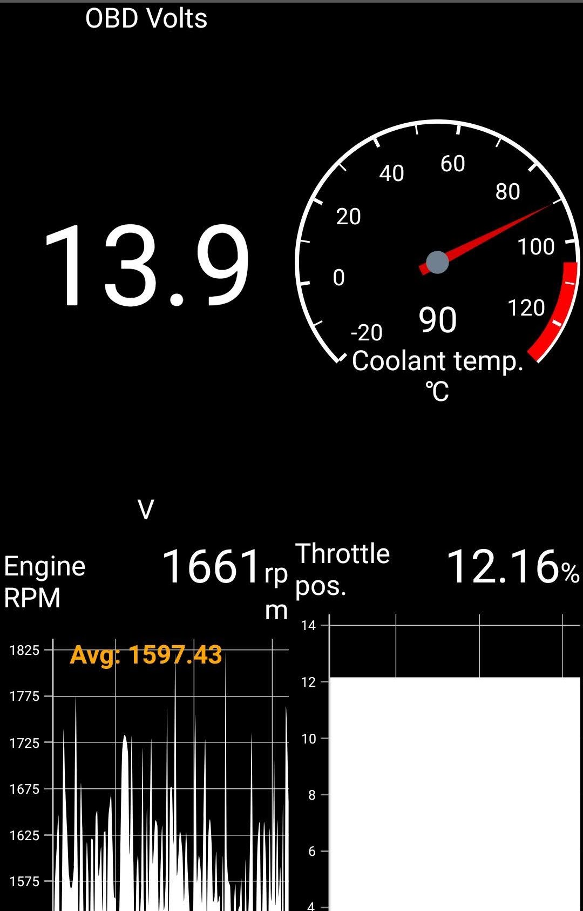
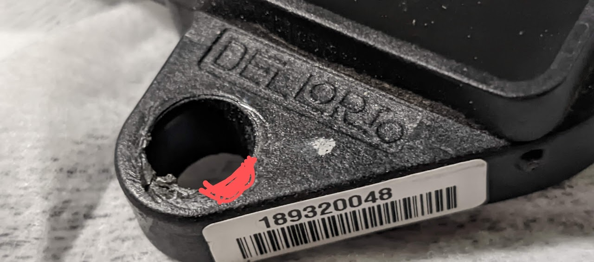

KTM EXC 2022 TPS Sensor Adjust
The problem
My KTM EXC 300 2022 did not run well from hour 0. Above 50% throttle it lost power or twitched.
Modifications
From the start I installed two mods, based on experience with my older 2018 model: an idle screw and a TPS sensor cover.
The idle screw adjusts idle better than the air bypass screw. I like how the bike feels at low revs with the air bypass screw almost all the way in. It also helps when a crankcase seal fails: idle goes off and you can compensate until the new seal arrives.
Refine the problem
More tests showed the problem was between 50% and 75% throttle. After 50% the bike felt restricted, lost power and ran with a spluttering sound.
Resolution try #1
First guess: a bad CCPS (pressure) sensor. I swapped them — zero result. An FMF Fatty pipe improved the whole range but kept the same 50–75% problem.
Final resolution
Last guess: TPS sensor position. The proper check is idle voltage: it should be 0.6 V. The TPS is a 5 V sensor, so at 0.6 V the ECU should read exactly 12% throttle.
I connected ELM327 OBD-II with the Car Scanner app and saw about 16%. Way off.
Loosening the bolts and rotating the sensor gave only ±1%. So I removed the steel rings:


After that the range became 12.5% to 18%.
At 12.5% the bike ran amazing, as it should. To rule out placebo I set 18% — it ran even worse than before. Back to 12.5%, then the idle screw to read 12%.
But I had to open the air bypass screw 6 turns to get 1550 idle RPM, which I did not like.
Later adjustments
I used a Dremel to enlarge the mounting holes for more TPS adjustment room. Now the air bypass screw is only 0.75 turn out.

Final thoughts
With the stock ECU the TPS should read 12% at idle. Mine read 15.5%, which led to wrong ECU map values in the mid range.